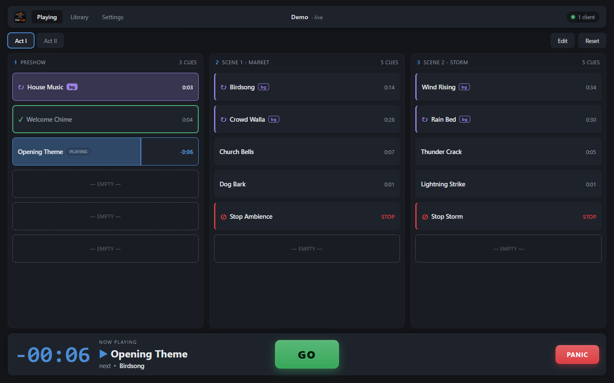
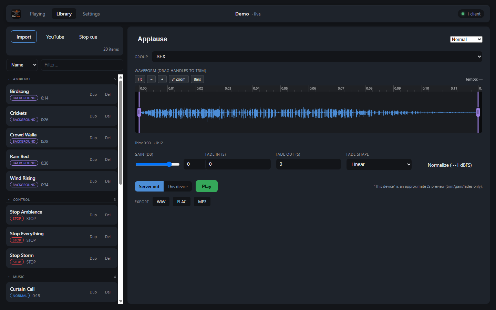

Open source · AGPL-3.0 · Windows & Linux
Press GO.
That’s the whole job.
CueForge is a free, open-source audio cue player for amateur and small-scale productions — community theatre, dance, school and church events, small venues. Run it on the booth PC; control the show from any browser on the network — laptop, tablet, or phone.
One file for Windows or Linux, no install. Prints a URL, PIN and QR code, and opens the console in your browser.
This grid is live — press GO.
Built for the small stage
Amateur productions run on limited time, borrowed hardware, and crews that change from show to show. So CueForge deliberately does less than professional show-control suites — and is learnable in an afternoon, dependable on show night.
GO Fire cues, in order, reliably
A grid of buttons and a big GO. No scripting, no MIDI routing matrices, no session concepts. A moving cursor always shows what GO will do next.
Aa Plain language everywhere
Volume instead of gain staging. “Plays as background” instead of bus assignments. Fades you drag directly on the waveform.
.cueforge One file per show
The whole production — cues, audio, layout — is a single file. Carry it on a USB stick, open it on another machine, and it plays.
Any browser is the console
The booth machine runs the server and produces the audio — it feeds the sound board, so playback is centralized and deterministic. The browsers are just controllers, and several can share one live show at once: the operator on a laptop, the director following along on a phone.
Remote devices join with a PIN or by scanning a QR code from the console. On iPad and iPhone, Add to Home Screen gives a true fullscreen control surface, and a wake lock keeps the screen on mid-show.

Cues that read at a glance
Every cue wears its type in the grid, so a glance tells you what GO will do.
A library that takes what you have
- Import audio in any format — decoded to 48 kHz via ffmpeg, fetched automatically on first use — or straight from YouTube.
- Trim, gain and fades on a zoomable waveform editor, with touch gestures on tablets.
- Duplicate imports are caught by content hash; groups, filter and sort keep long shows tidy.
- Audition through the theatre speakers or on your own device before the cue goes in the show.
- Export any cue as WAV, FLAC or MP3 with trim, volume and fades baked in.

Get CueForge
Windows
Grab the prebuilt CueForge.exe — no install, just run
it. It keeps itself current with one-click updates.
Linux
A single self-contained binary for Intel/AMD
(CueForge-linux-x86_64) or ARM, including a Raspberry Pi
4/5 (CueForge-linux-aarch64). Mark it executable and run
it; it self-updates the same way.
chmod +x CueForge-linux-x86_64
./CueForge-linux-x86_64From source
Requires Python 3.13. ffmpeg and yt-dlp are downloaded
automatically on first use. On Linux, install PortAudio first
(libportaudio2 on Debian/Ubuntu).
python -m venv .venv
# Windows
.venv/Scripts/python.exe -m pip install -r requirements.txt
.venv/Scripts/python.exe -m cueforge
# Linux
.venv/bin/python -m pip install -r requirements.txt
.venv/bin/python -m cueforge